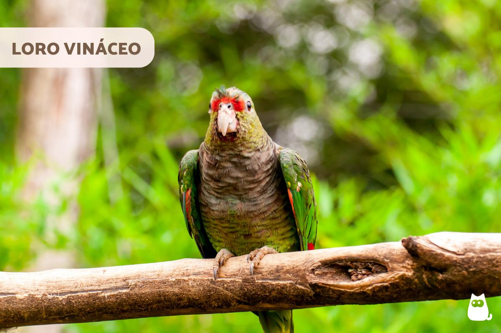

HISTORIAS DE RESCATE
Conocé las historias reales detrás de los animales nativos que protegemos y rehabilitamos en nuestro territorio.
CONOCÉ MÁS
UN FUTURO SOSTENIBLE
Monitoreo digital avanzado y patrullaje estratégico permanente para asegurar la supervivencia de especies críticas.
NUESTRA MISIÓN
Un refugio tecnológico para la vida silvestre
En Huellas Salvajes fusionamos el monitoreo digital avanzado con la conservación en territorio. Nacimos con el objetivo de restaurar corredores biológicos críticos y ofrecer un espacio seguro para especies en peligro de extinción, involucrando activamente a las comunidades locales y la comunidad científica.
3,450
Animales Rescatados
- 1,210 Carpinchos
- 840 Loros Vináceos
- 620 Osos Hormigueros
- 430 Peccaries del Chaco
- 210 Ciervos de los Pantanos
- 90 Tapires
- 45 Gatos Andinos
- 5 Yaguaretés
25,000+
Áreas Protegidas (Ha)
1,200+
Voluntarios Activos
CONSERVACIÓN EN TIEMPO REAL
Especies Bajo Nuestro Cuidado
Revolucioná tu ayuda
Tu colaboración nos permite expandir las redes de cámaras trampa, financiar tratamientos médicos veterinarios de urgencia y mantener los patrullajes anti-caza furtiva las 24 horas sin invadir su ecosistema.
contacto@huellassalvajes.org
San Miguel de Tucumán, Argentina
RESOLVÉ TUS DUDAS
Preguntas Frecuentes
Nos financiamos principalmente gracias a las donaciones de particulares, empresas comprometidas con el medio ambiente y subsidios destinados a la investigación científica y conservación de la biodiversidad.
No. Los animales viven en total libertad dentro de los corredores biológicos protegidos. Solo se interviene médicamente en recintos temporales si un ejemplar herido requiere asistencia veterinaria urgente antes de su liberación.